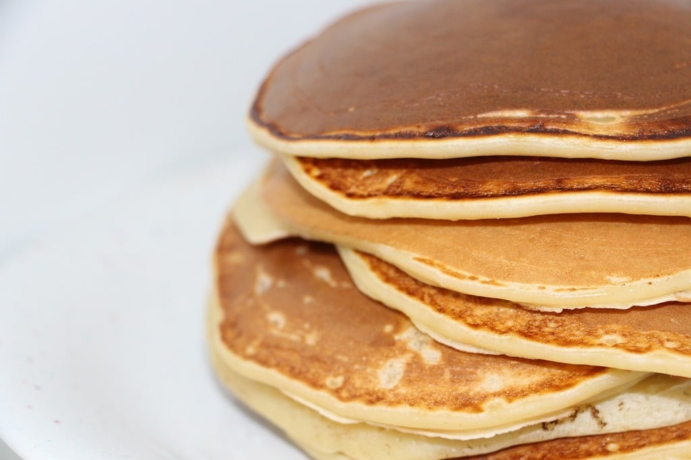

Home Page
Pancakes

Desserts, source of everyone's happiness I can assume.
Desserts would be a good choice to eat after a good healthy meal.
Today, we'll be talking about Pancakes, some easy to prepare dessert and a delicious one.
Ingredients:
- 1 Yoghurt diluted with milk.
- 1 small spoon of Vanila liquid
- 3 big spoons of sugar
- 1 Egg
- 1 big cup of flour
- 1 big spoon of baking soda
- 3 big spoons of oil
And you're almost done!
Steps:
- Add the ingredients, and mix until it becomes one liquid.
- Heat a pan on high heat for few seconds then lower it.
- Put small amout of the liquid and let it cook easily.
- Remove the Pancakes from the pan and put them on a serving dish.
And what I like to do now, is to heat some chocolate on a bowl until it's fully liquid,
then just pour it evenly on the pancakes! It adds an amazing flavour.